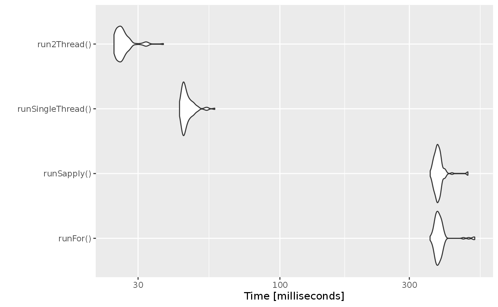

Increasing RxODE speed by multi-subject parallel solving
RxODE originally developed as an ODE solver that allowed an ODE solve for a single subject. This flexibility is still supported.
The original code from the RxODE tutorial is below:
library(RxODE)
#> RxODE 1.0.0.0 using 1 threads (see ?getRxThreads)
#> no cache: create with `rxCreateCache()`
library(microbenchmark)
library(ggplot2)
mod1 <- RxODE({
C2 = centr/V2;
C3 = peri/V3;
d/dt(depot) = -KA*depot;
d/dt(centr) = KA*depot - CL*C2 - Q*C2 + Q*C3;
d/dt(peri) = Q*C2 - Q*C3;
d/dt(eff) = Kin - Kout*(1-C2/(EC50+C2))*eff;
eff(0) = 1
})
#> qs v0.23.4.
## Create an event table
ev <- et() %>%
et(amt=10000, addl=9,ii=12) %>%
et(time=120, amt=20000, addl=4, ii=24) %>%
et(0:240) ## Add Sampling
nsub <- 100 # 100 sub-problems
sigma <- matrix(c(0.09,0.08,0.08,0.25),2,2) # IIV covariance matrix
mv <- rxRmvn(n=nsub, rep(0,2), sigma) # Sample from covariance matrix
CL <- 7*exp(mv[,1])
V2 <- 40*exp(mv[,2])
params.all <- cbind(KA=0.3, CL=CL, V2=V2, Q=10, V3=300,
Kin=0.2, Kout=0.2, EC50=8)For Loop
The slowest way to code this is to use a for loop. In this example we will enclose it in a function to compare timing.
Running with apply
In general for R, the apply types of functions perform better than a for loop, so the tutorial also suggests this speed enhancement
runSapply <- function(){
res <- apply(params.all, 1, function(theta)
mod1$run(theta, ev, cacheEvent=FALSE)[, "eff"])
}Run using a single-threaded solve
You can also have RxODE solve all the subject simultaneously without collecting the results in R, using a single threaded solve.
The data output is slightly different here, but still gives the same information:
Run a 2 threaded solve
RxODE supports multi-threaded solves, so another option is to have 2 threads (called cores in the solve options, you can see the options in rxControl() or rxSolve()).
Compare the times between all the methods
Now the moment of truth, the timings:
bench <- microbenchmark(runFor(), runSapply(), runSingleThread(),run2Thread())
print(bench)
#> Unit: milliseconds
#> expr min lq mean median uq max
#> runFor() 220.3074 226.3849 232.12563 230.07580 234.82735 303.4840
#> runSapply() 217.2941 226.1978 232.19266 229.46225 233.94550 316.4348
#> runSingleThread() 33.4953 34.9471 37.04022 36.16285 38.55015 46.6005
#> run2Thread() 18.7088 21.3495 22.53443 22.09520 23.24860 28.5332
#> neval
#> 100
#> 100
#> 100
#> 100
autoplot(bench)
#> Coordinate system already present. Adding new coordinate system, which will replace the existing one.
It is clear that the largest jump in performance when using the solve method and providing all the parameters to RxODE to solve without looping over each subject with either a for or a sapply. The number of cores/threads applied to the solve also plays a role in the solving.
We can explore the number of threads further with the following code:
runThread <- function(n){
solve(mod1, params.all, ev, cores=n, cacheEvent=FALSE)[,c("sim.id", "time", "eff")]
}
bench <- eval(parse(text=sprintf("microbenchmark(%s)",
paste(paste0("runThread(", seq(1, 2 * rxCores()),")"),
collapse=","))))
print(bench)
#> Unit: milliseconds
#> expr min lq mean median uq max neval
#> runThread(1) 33.3678 35.27245 36.73295 36.35165 37.89290 43.6509 100
#> runThread(2) 18.8187 21.70740 23.10027 22.52180 24.75375 28.6172 100
autoplot(bench)
#> Coordinate system already present. Adding new coordinate system, which will replace the existing one.
There can be a suite spot in speed vs number or cores. The system type (mac, linux, windows and/or processor), complexity of the ODE solving and the number of subjects may affect this arbitrary number of threads. 4 threads is a good number to use without any prior knowledge because most systems these days have at least 4 threads (or 2 processors with 4 threads).
A real life example
Before some of the parallel solving was implemented, the fastest way to run RxODE was with lapply. This is how Rik Schoemaker created the data-set for nlmixr comparisons, but reduced to run faster automatic building of the pkgdown website.
library(RxODE)
library(data.table)
#Define the RxODE model
ode1 <- "
d/dt(abs) = -KA*abs;
d/dt(centr) = KA*abs-(CL/V)*centr;
C2=centr/V;
"
#Create the RxODE simulation object
mod1 <- RxODE(model = ode1)
#Population parameter values on log-scale
paramsl <- c(CL = log(4),
V = log(70),
KA = log(1))
#make 10,000 subjects to sample from:
nsubg <- 300 # subjects per dose
doses <- c(10, 30, 60, 120)
nsub <- nsubg * length(doses)
#IIV of 30% for each parameter
omega <- diag(c(0.09, 0.09, 0.09))# IIV covariance matrix
sigma <- 0.2
#Sample from the multivariate normal
set.seed(98176247)
library(MASS)
mv <-
mvrnorm(nsub, rep(0, dim(omega)[1]), omega) # Sample from covariance matrix
#Combine population parameters with IIV
params.all <-
data.table(
"ID" = seq(1:nsub),
"CL" = exp(paramsl['CL'] + mv[, 1]),
"V" = exp(paramsl['V'] + mv[, 2]),
"KA" = exp(paramsl['KA'] + mv[, 3])
)
#set the doses (looping through the 4 doses)
params.all[, AMT := rep(100 * doses,nsubg)]
Startlapply <- Sys.time()
#Run the simulations using lapply for speed
s = lapply(1:nsub, function(i) {
#selects the parameters associated with the subject to be simulated
params <- params.all[i]
#creates an eventTable with 7 doses every 24 hours
ev <- eventTable()
ev$add.dosing(
dose = params$AMT,
nbr.doses = 1,
dosing.to = 1,
rate = NULL,
start.time = 0
)
#generates 4 random samples in a 24 hour period
ev$add.sampling(c(0, sort(round(sample(runif(600, 0, 1440), 4) / 60, 2))))
#runs the RxODE simulation
x <- as.data.table(mod1$run(params, ev))
#merges the parameters and ID number to the simulation output
x[, names(params) := params]
})
#runs the entire sequence of 100 subjects and binds the results to the object res
res = as.data.table(do.call("rbind", s))
Stoplapply <- Sys.time()
print(Stoplapply - Startlapply)
#> Time difference of 6.468251 secsBy applying some of the new parallel solving concepts you can simply run the same simulation both with less code and faster:
rx <- RxODE({
CL = log(4)
V = log(70)
KA = log(1)
CL = exp(CL + eta.CL)
V = exp(V + eta.V)
KA = exp(KA + eta.KA)
d/dt(abs) = -KA*abs;
d/dt(centr) = KA*abs-(CL/V)*centr;
C2=centr/V;
})
omega <- lotri(eta.CL ~ 0.09,
eta.V ~ 0.09,
eta.KA ~ 0.09)
doses <- c(10, 30, 60, 120)
startParallel <- Sys.time()
ev <- do.call("rbind",
lapply(seq_along(doses), function(i){
et() %>%
et(amt=doses[i]) %>% # Add single dose
et(0) %>% # Add 0 observation
## Generate 4 samples in 24 hour period
et(lapply(1:4, function(...){c(0, 24)})) %>%
et(id=seq(1, nsubg) + (i - 1) * nsubg) %>%
## Convert to data frame to skip sorting the data
## When binding the data together
as.data.frame
}))
## To better compare, use the same output, that is data.table
res <- rxSolve(rx, ev, omega=omega, returnType="data.table")
endParallel <- Sys.time()
print(endParallel - startParallel)
#> Time difference of 0.1240087 secsYou can see a striking time difference between the two methods; A few things to keep in mind:
RxODEuse the thread-safe sitmothreefryroutines for simulation ofetavalues. Therefore the results are expected to be different (also the random samples are taken in a different order which would be different)This prior simulation was run in R 3.5, which has a different random number generator so the results in this simulation will be different from the actual nlmixr comparison when using the slower simulation.
This speed comparison used
data.table.RxODEusesdata.tableinternally (when available) try to speed up sorting, so this would be different than installations wheredata.tableis not installed. You can force RxODE to useorder()when sorting by usingforderForceBase(TRUE). In this case there is little difference between the two, though in other examplesdata.table’s presence leads to a speed increase (and less likely it could lead to a slowdown).
Want more ways to run multi-subject simulations
The version since the tutorial has even more ways to run multi-subject simulations, including adding variability in sampling and dosing times with et() (see RxODE events for more information), ability to supply both an omega and sigma matrix as well as adding as a thetaMat to R to simulate with uncertainty in the omega, sigma and theta matrices; see RxODE simulation vignette.
Session Information
The session information:
sessionInfo()
#> R version 4.0.3 (2020-10-10)
#> Platform: x86_64-pc-linux-gnu (64-bit)
#> Running under: Ubuntu 16.04.7 LTS
#>
#> Matrix products: default
#> BLAS: /usr/lib/openblas-base/libblas.so.3
#> LAPACK: /usr/lib/libopenblasp-r0.2.18.so
#>
#> locale:
#> [1] LC_CTYPE=en_US.UTF-8 LC_NUMERIC=C
#> [3] LC_TIME=en_US.UTF-8 LC_COLLATE=en_US.UTF-8
#> [5] LC_MONETARY=en_US.UTF-8 LC_MESSAGES=en_US.UTF-8
#> [7] LC_PAPER=en_US.UTF-8 LC_NAME=C
#> [9] LC_ADDRESS=C LC_TELEPHONE=C
#> [11] LC_MEASUREMENT=en_US.UTF-8 LC_IDENTIFICATION=C
#>
#> attached base packages:
#> [1] stats graphics grDevices utils datasets methods base
#>
#> other attached packages:
#> [1] MASS_7.3-53 data.table_1.13.4 qs_0.23.4
#> [4] ggplot2_3.3.2 microbenchmark_1.4-7 RxODE_1.0.0-0
#>
#> loaded via a namespace (and not attached):
#> [1] Rcpp_1.0.5 compiler_4.0.3 pillar_1.4.7
#> [4] sys_3.4 PreciseSums_0.4 tools_4.0.3
#> [7] digest_0.6.27 evaluate_0.14 memoise_1.1.0
#> [10] lifecycle_0.2.0 tibble_3.0.4 checkmate_2.0.0
#> [13] gtable_0.3.0 pkgconfig_2.0.3 rlang_0.4.9
#> [16] cli_2.2.0 yaml_2.2.1 pkgdown_1.6.1.9000
#> [19] xfun_0.19 withr_2.3.0 stringr_1.4.0
#> [22] dplyr_1.0.2 knitr_1.30 desc_1.2.0
#> [25] generics_0.1.0 fs_1.5.0 vctrs_0.3.5
#> [28] systemfonts_0.3.2 tidyselect_1.1.0 rprojroot_2.0.2
#> [31] grid_4.0.3 RApiSerialize_0.1.0 glue_1.4.2
#> [34] R6_2.5.0 textshaping_0.2.1 fansi_0.4.1
#> [37] rmarkdown_2.5 farver_2.0.3 dparser_0.1.8
#> [40] purrr_0.3.4 magrittr_2.0.1 units_0.6-7
#> [43] backports_1.2.1 scales_1.1.1 htmltools_0.5.0
#> [46] ellipsis_0.3.1 assertthat_0.2.1 mime_0.9
#> [49] colorspace_2.0-0 ragg_0.4.0 stringfish_0.14.2
#> [52] lotri_0.2.2 stringi_1.5.3 RcppParallel_5.0.2
#> [55] munsell_0.5.0 crayon_1.3.4